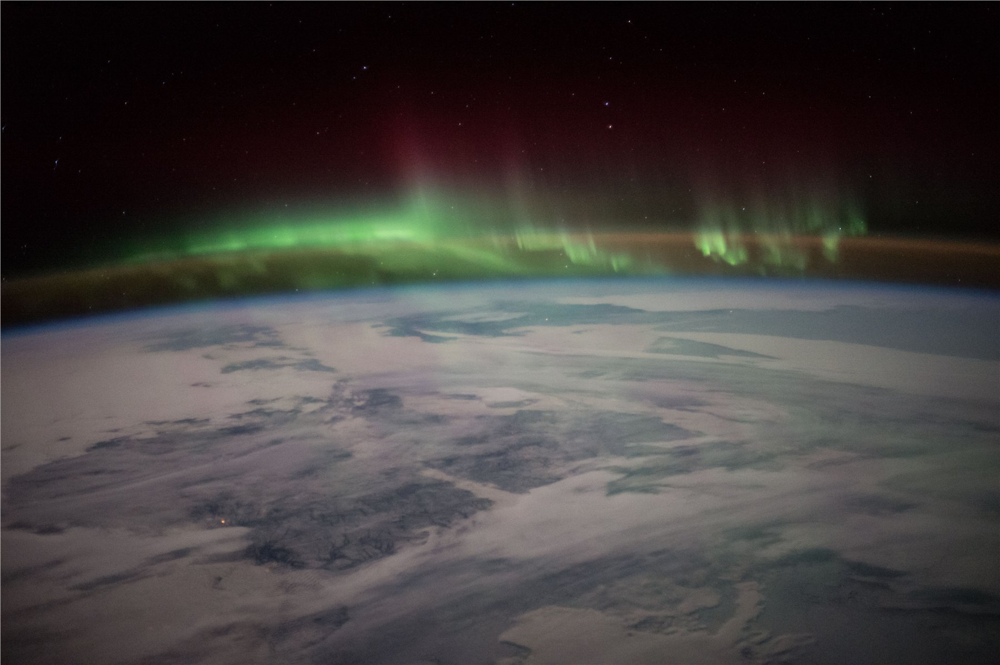

这张照片没有三脚架、没有滤镜，只有一台贴着舷窗的尼康相机，和一位已经在太空里连续生活了三百多个日夜的宇航员。斯科特·凯利在"一年任务"（Year In Space）飞行期间，几乎每天都会把舷窗外的地球拍下来发到社交媒体——这一次，他拍到的是地球大气层本身正在发光：脚下是被积雪覆盖的加拿大，头顶是被太阳风点燃的一整条绿色光幕，再往上，还翻涌出一层他自己也未必常拍到的猩红色高层极光。
凯利让地球的弧线贴着画面下方三分之一处横切过去，把绝大部分画幅——从蓝色大气边缘到漆黑的星空——都留给了头顶发生的事。这是一种诚实的取景比例：从轨道高度看下去，维系全部生命的大气层，真的只是一层薄薄的光带。
画面本该是纯粹的水平分层——雪原、蓝边、绿幕、红晕、星空，一层叠一层——但极光本身并不安分：那些参差不齐、忽明忽暗的光柱像被风吹动的帘幕一样竖直向上窜动，在水平的宁静里凿出了一种真实的、正在发生的动态感。
雪原深处还有一个极小的暖橙色光点（很可能是地面的一处城镇灯光），安静地嵌在大片冷色调之中——它把"人类尺度"重新放回了画面里，让头顶那场几百公里高的宇宙级放电现象，有了一个可以对照的参照物。
这张照片的颜色全部来自大气物理，而非后期：绿色是100–150公里高度上的原子氧被太阳风粒子激发后释放出的557.7纳米波长光——这是极光里最常见、也最容易被拍到的颜色，一部分原因正是人眼在明视觉条件下对绿光最敏感。
顶部那层更稀薄的猩红色，来自200–400公里更高处的原子氧，需要更强的地磁扰动才会被激发，所以它总是更少见、也更容易被忽略——出现在画面最上方，恰好暗示着这是一场能量级别不低的地磁暴。而贴着地球轮廓的那道蓝色辉光，其实并不是极光本身，是低层大气对阳光的瑞利散射，是"从太空侧视"时大气层露出的自己的颜色。
把整张照片拆开看，其实是一条从冷到暖、再回到冷的五级色带——雪原灰蓝、大气边缘蓝、极光核心绿、高层猩红、深空墨黑——这条渐变本身就是一份可以直接挪用的调色方案。
极光很暗、很弥散，天然需要大光圈和慢快门去收集足够的光；可国际空间站以每秒7.66公里的速度绕地球飞行，每92分钟就是一整圈——任何偏长的曝光时间，理论上都会把地球表面拍成一道模糊的光带。这张照片的参数，正是这场博弈留下的痕迹：f/1.4大光圈、50mm标准焦段、1/8秒快门、ISO 10000。
与其靠拉长快门去妥协，凯利选择把感光度推到一万——用画面颗粒感换取相对更短的曝光时间，把轨道运动带来的拖影压到最低。这也是几乎所有国际空间站夜拍照片背后共同的技术逻辑：光源很弱、平台在动，快门永远是最后才能让步的那个变量。
ISO 10000留下的噪点在漆黑的星空区域尤其明显，但这种颗粒质感并未破坏画面，反而像是给深空又叠加了一层若有若无的"呼吸感"，让"这是从真实轨道上拍下来的"这件事变得更加可信。
这张照片没有任何摆拍痕迹，甚至可以说是相当"随手"——它诞生于凯利与俄罗斯宇航员米哈伊尔·科尔年科长达340天的"一年任务"期间，这是当时美国宇航员单次太空飞行的最长纪录，也是NASA为未来登陆火星做准备而设立的"双胞胎研究"的一部分：凯利在轨道上，他的同卵双胞胎兄弟马克·凯利留在地面，作为对照组接受同样的生理监测。
更打动人的，或许是凯利本人的习惯：他几乎每天都会把舷窗外的地球发到社交媒体上，任务结束时积累了上百万关注者。像这样一张照片，原本只属于极少数曾亲眼看过"地球边缘"的人，却因为这份近乎日更的分享，变成了普通人也能间接体验的"总观效应"（overview effect）——那种宇航员们反复描述的、看见大气层薄如蝉翼却托举着全部生命时，价值排序被重新洗牌的瞬间。
它安静地道出了一种尺度上的诚实：那层被人类视为理所当然的、维系一切生命的大气，从轨道回望，不过是漆黑虚空前几十公里厚的一条发光边缘。
斯科特·凯利（Scott Kelly，1964年生）是前美国海军试飞员、NASA宇航员，一生四次飞入太空，其中最广为人知的，就是2015年3月至2016年3月长达340天的"一年任务"——当时美国宇航员单次在轨时间的纪录保持者。他的同卵双胞胎兄弟马克·凯利同样是宇航员（后来当选联邦参议员），两人共同参与了NASA著名的"双胞胎研究"，为未来长期深空飞行（包括登陆火星）积累人体数据。
凯利以在轨期间几乎每日在社交媒体分享地球摄影闻名，任务结束后将这些影像整理出版为摄影集《无限奇迹》(Infinite Wonder: An Astronaut's Photographs from a Year in Space, 2018)。作为NASA拍摄的作品，这张照片在美国法律下不受版权保护，属于公有领域，可自由使用。